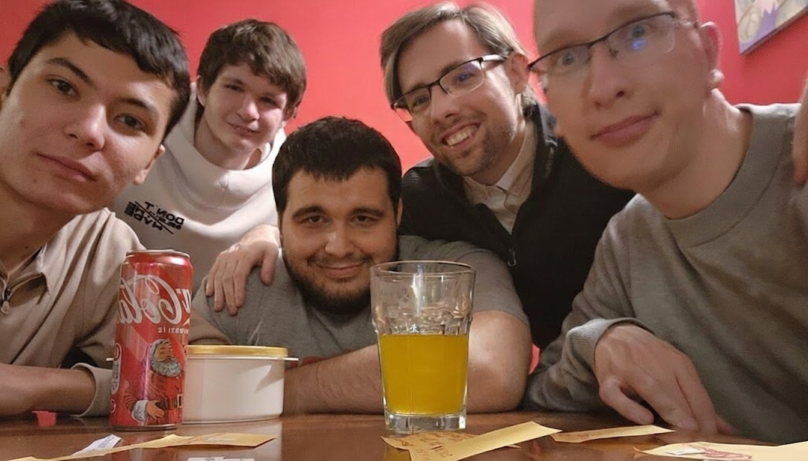

My Journey: How It All Started
Published on February 6, 2026
Looking back at how I got into tech, it feels like a wild ride. It all started when I was 14, back in 2020. I didn't have some fancy mentor; I just had YouTube and a lot of curiosity. I started by copying HTML codes from videos by Saidbek Arislonov. I got pretty good at HTML and CSS because I practiced so much I basically knew them by heart, but JavaScript? That was a nightmare at first. I just couldn't wrap my head around it until I found some Khan Academy videos and shifted my focus to Python with help from Botir Ziyatov and Anvar Narzullayev.
By 2021, things took a weird but cool turn. A local government IT center didn't have a teacher, so they actually hired me—a teenager—to teach frontend and backend. I had students who were way older than me, even school teachers and medics! It was a bit surreal, but it taught me so much about explaining complex stuff simply. Around that time, I also started digging into Flutter because I wanted to build mobile apps.
2022 was the year of "trying and failing." I tried to launch a taxi app for my region. Twice. It failed both times because I didn't have the money to keep it going. Instead of giving up, I pivot to Telegram bots. That worked! I got over 10,000 users and finally earned my first dollar online. I also spent a lot of time improving my English, eventually getting my IELTS and SAT scores ready for university apps.
2023 was a massive year for me. I started building APIs and put them on RapidAPI just to see what would happen. To my surprise, people actually started paying for them. By now, I have been over 5,000 developers using my tools. I even built my own platform, FAPIhub, to monetize my APIs. Got IELTS, SAT, started college applications and all that hard work paid off with over $1 million in scholarship offers from various universities.
In 2024, I did an internship at MagicAPI which was a huge learning curve. Believe it or not, I graduated from both the internship and high school on the very same day! Soon after, I moved to Europe to start my Bachelor's degree in CS in Hungary.
But 2025 was a reality check. My API business started to fail, and the apps I built—Tavi and CalVault—didn't really take off. I realized I was good at building things but terrible at marketing them. It was a tough pill to swallow, but it led me to join the EvoCampus program at EvoSoft.
Now in 2026, I've finished that program and I'm ready for whatever comes next. It’s been a series of ups and downs, but I wouldn't trade the experience for anything. Coding isn't just about the syntax; it's about solving problems and moving forward even when things don't go as planned.
Anyway, thanks for reading my story! Here is a photo of me from my journey.
